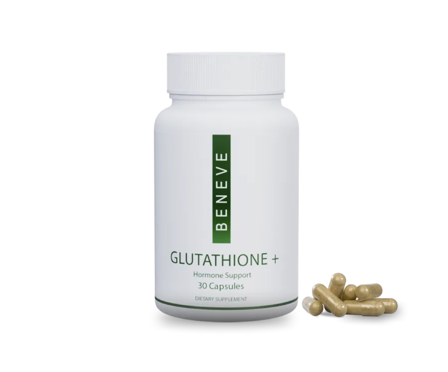
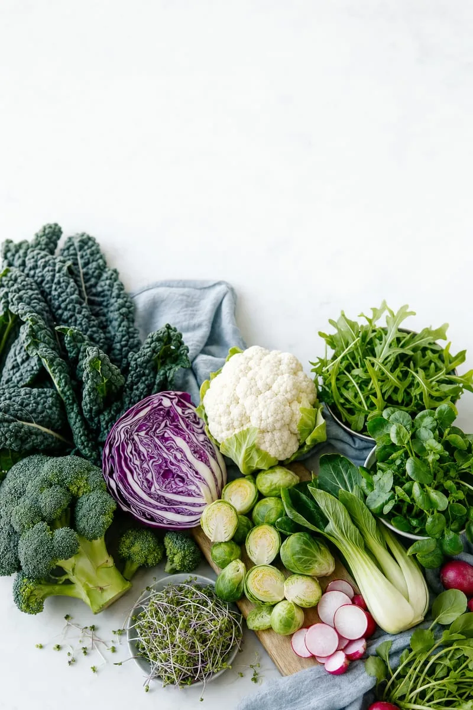
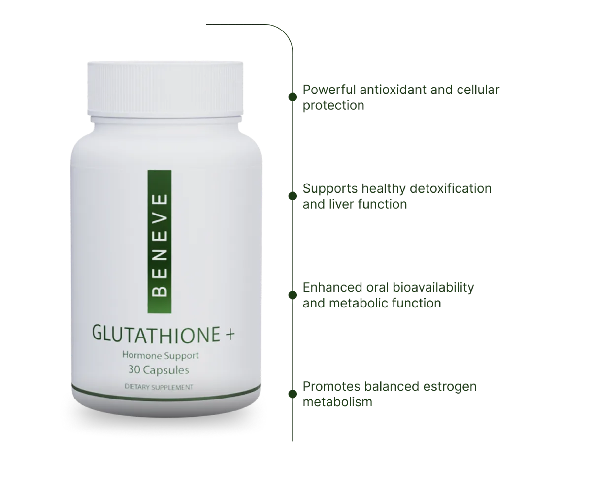
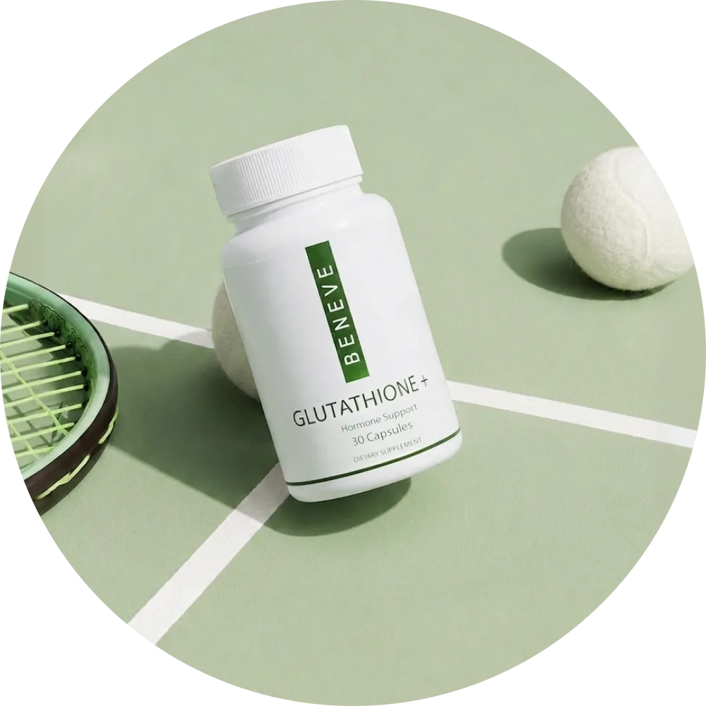
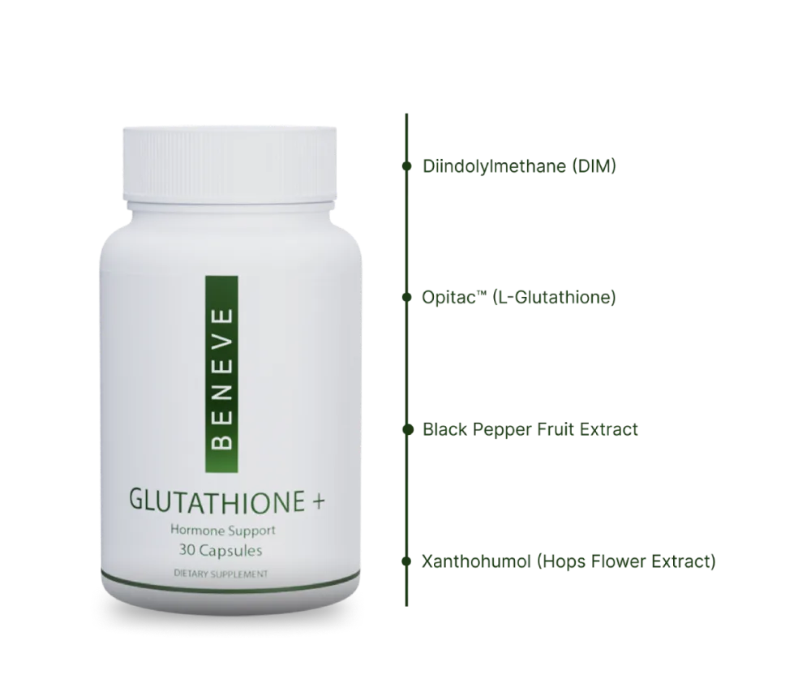
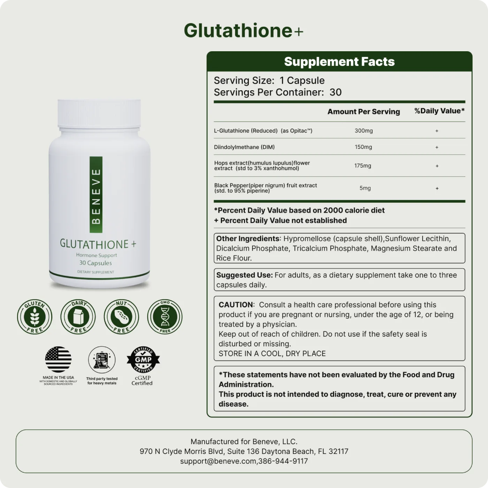

Mezcla antioxidante excepcional
Una formulación de primera línea con DIM, Xanthohumol y Opitac™ Glutathione, poderosos antioxidantes que ayudan a defender tu cuerpo a nivel celular.
La parte de tu rutina para el estrés, el sueño y el sol
Una mezcla antioxidante con Glutathione, DIM y Xanthohumol, formulada para apoyar la salud de las células, el apoyo hormonal y el bienestar en general.

Ya sea que te enfoques en el bienestar del día a día, la recuperación o el apoyo de base, Glutathione+ te ayuda a llevar tu camino de salud al siguiente nivel con cápsulas diarias limpias y fáciles de tomar.
Una formulación de primera línea con DIM, Xanthohumol y Opitac™ Glutathione, poderosos antioxidantes que ayudan a defender tu cuerpo a nivel celular.
Los ingredientes trabajan en sinergia para ayudar a apoyar la actividad de la proteína quinasa activada por AMP (AMP-K), un regulador clave de la energía y el metabolismo.
Una cápsula fácil al día se integra sin esfuerzo a tu rutina. Sin mezclar, sin medir, sin complicaciones.
Sin nueces, sin lácteos, sin gluten y sin transgénicos, hecha con una calidad en la que puedes confiar.
Qué lo hace diferente

El DIM es un compuesto que viene de las verduras crucíferas, como el brócoli y la col rizada. Ha recibido mucha atención por su posible apoyo a la salud hormonal natural del cuerpo.
Si tu resultado apuntó a opacidad o a un cambio hormonal, este es el ingrediente para eso. Puedes obtener DIM del brócoli, la col y las coles de Bruselas, y tu rutina gratis te muestra cómo. La cápsula cubre las semanas en que no las cocinas.

El glutatión, el superhéroe de los antioxidantes. Conocido por promover el bienestar general y por ser importante para la salud hormonal, el apoyo inmunológico y la desintoxicación.
Opitac es una forma de marca que tu cuerpo puede absorber desde una cápsula. Al cuerpo le cuesta absorber el glutatión común.

Un flavonoide natural que se encuentra en el lúpulo, la misma planta que se usa para hacer cerveza. Se ha estudiado por su capacidad de neutralizar los radicales libres en el cuerpo y de contribuir a la salud general del cuerpo y al apoyo del proceso de envejecimiento.
De los cuatro, es el que menos probable es que obtengas de la comida.

El cuarto activo de la fórmula, junto con DIM, Opitac™ Glutathione y Xanthohumol.
Ayuda a tu cuerpo a absorber los otros tres.
Ingredientes premium
Se sabe que Glutathione+ ayuda a apoyar:
Si estás embarazada, en lactancia, tomas medicamentos o tienes una condición médica, habla con tu profesional de la salud antes de tomar este o cualquier suplemento alimenticio.

Renew trabaja en tu piel, y Luxe le da a tu cuerpo colágeno para construir. Glutathione+ es el antioxidante de tu rutina, para el estrés, las noches cortas, el sol y la copa de vino casi todas las noches que se notan en tu cara. Es una cápsula al día.
Estas declaraciones no han sido evaluadas por la Administración de Alimentos y Medicamentos (FDA). Este producto no está destinado a diagnosticar, tratar, curar ni prevenir ninguna enfermedad.